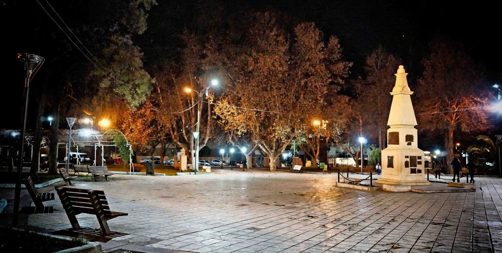
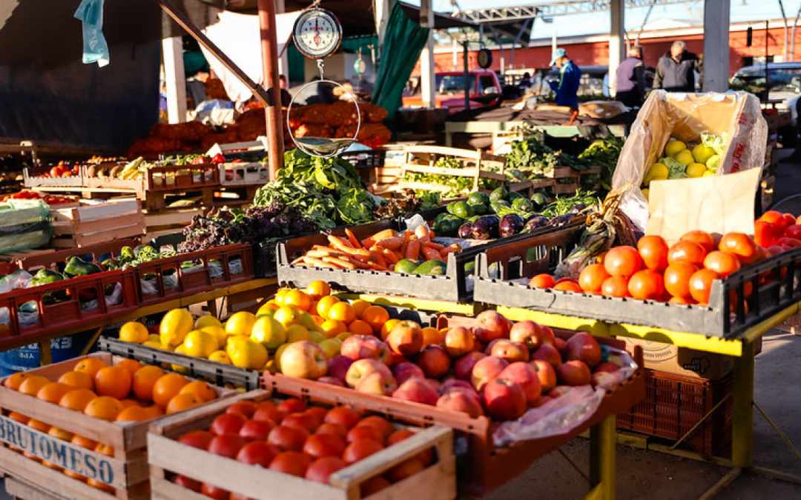
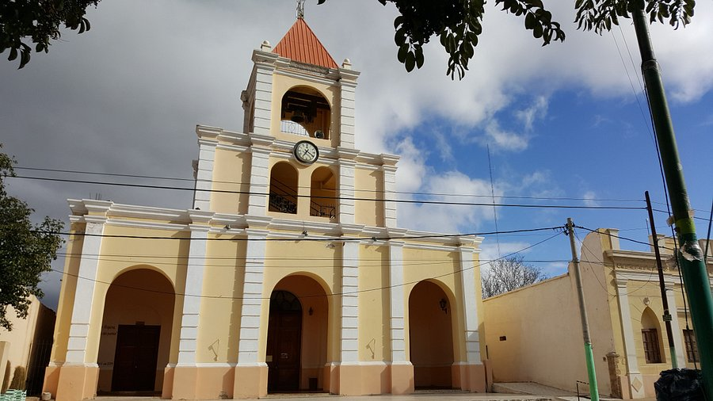
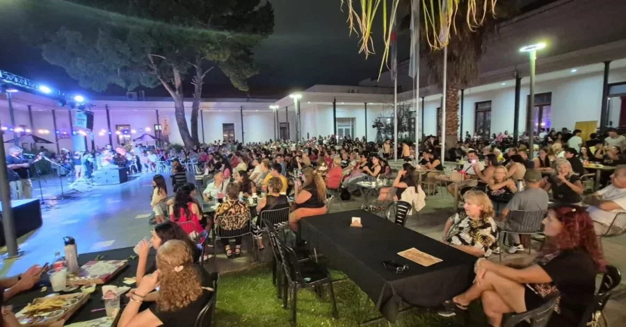
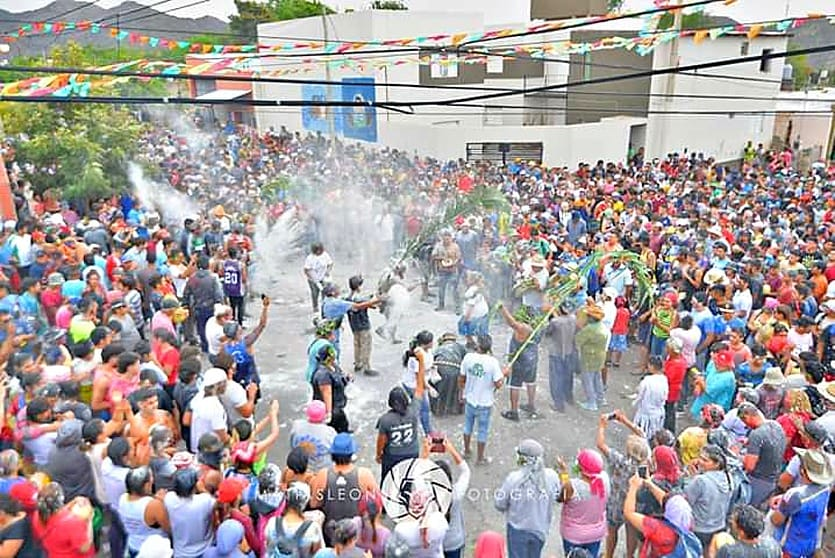

La Plaza Caudillos Federales es el epicentro de la vida cotidiana: allí se reúnen familias, amigos y visitantes para compartir mates, charlas y ferias artesanales espontáneas. Rodeada de jacarandás y tipas, la plaza conserva su encanto de pueblo del interior, con bancos de madera, fuentes y el sonido constante de niños jugando.

Plaza Caudillos Federales – el alma del pueblo todos los días
Frente a la plaza se destaca la Parroquia Sagrado Corazón de Jesús (siglo XIX), con su torre reloj que marca el ritmo de la ciudad. A pocas cuadras, el mercado municipal y las calles peatonales concentran la actividad comercial más auténtica: productores locales vendiendo aceitunas, nueces, quesos de cabra, dulces de membrillo y vinos de altura directamente de las fincas familiares.
La rutina en Chilecito tiene su propio encanto: caminatas por calles arboladas, mates en la vereda, ferias improvisadas y música folclórica que sale de alguna casa o peña al caer la tarde.

El punto de encuentro diario para comprar productos frescos y regionales: aceitunas de primera calidad, nueces de nogal, frutas secas, quesos artesanales de cabra y oveja, miel de algarrobo, dulces caseros y artesanías en cuero y madera. Los fines de semana se llena de puestos de comida casera: empanadas fritas, humitas y locro.

Ubicada en el distrito de Famatina (a pocos km del centro), esta iglesia colonial del siglo XVIII es uno de los templos más antiguos de la zona. Su fachada sencilla de adobe y su interior con retablos tallados en madera reflejan la influencia jesuítica y la devoción popular. Es un lugar de paz y reflexión, muy visitado en fiestas patronales.

Al caer la tarde, varias peñas abren sus puertas: guitarras, bombos legüero, zambas, chacareras y chayas resuenan hasta la medianoche. Lugares como La Chaya o peñas familiares ofrecen empanadas, vino patero y un ambiente cálido y auténtico. Es la forma más genuina de vivir la noche riojana.

Febrero es el mes más vibrante: la Chaya (con harina, albahaca y agua) y el Carnaval con comparsas, murgas y corsos. También se realiza la Feria del Libro y la Fiesta Nacional del Cabrito, con asados masivos, música en vivo y desfiles. Estos eventos reúnen a miles de personas y muestran la alegría colectiva del pueblo.
Con apenas 30.000 habitantes, Chilecito conserva esa esencia de pueblo chico donde todos se conocen y la vida transcurre sin prisa, rodeada de sierras y viñedos.